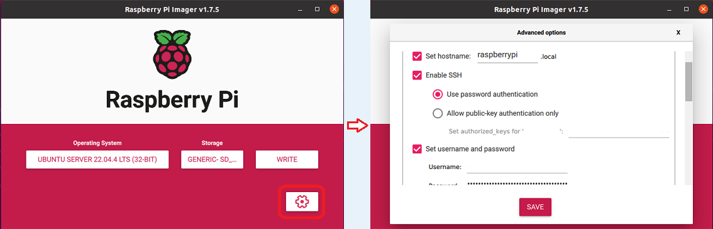
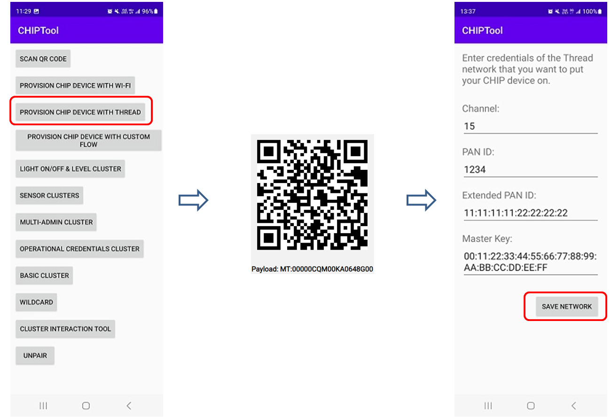
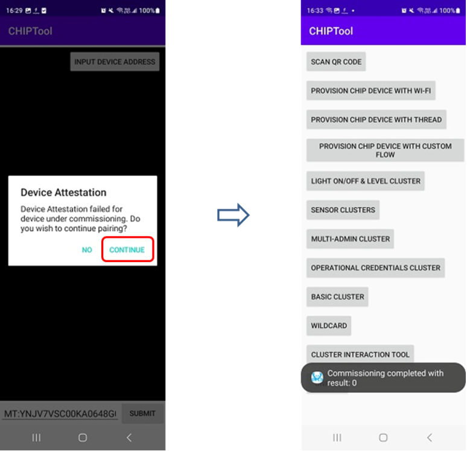
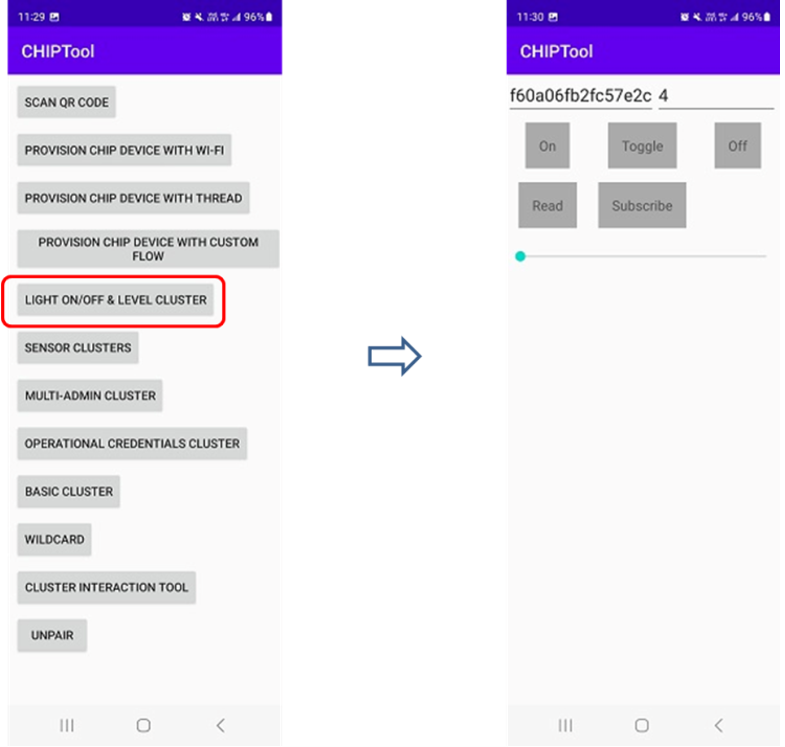
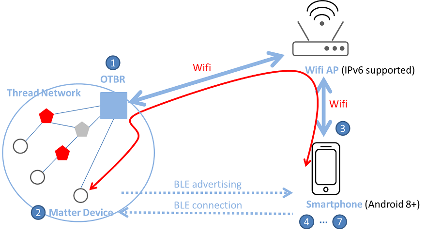

OpenThread 边界路由器
边界路由器是能够在网状网络内外路由数据包的设备。Thread 边界路由器是连接 Thread 网络和其他基于 IP 的网络 (如 Wi-Fi 或以太网) 的设备。
术语和概念
本节详细介绍了边界路由器 (Border Router) 所支持的关键网络功能、特性与服务。 这些功能和特性为现代网络环境提供了强大的支持，能够实现多种网络拓扑之间的无缝通信、管理和配置。
关键网络功能
双向 IP 连接
实现 Thread 和 Wi-Fi/以太网网络之间的双向 IP 连接，确保设备可以在不同网络协议之间顺畅通信。这种连接对于有多个设备和广泛网络覆盖的环境尤其重要。
双向服务发现
通过使用 mDNS 和 SRP，边界路由器能够支持设备在 Wi-Fi/以太网和 Thread 网络中进行服务的双向发现。这种功能有助于自动化设备的发现与配置，提高网络效率。
基于基础架构的 Thread 分区合并
通过 IP 链路合并分区，使得多个独立的 Thread 网络能够协同工作，形成更大的统一网络，从而提高网络的冗余性和可靠性。
外部 Thread 委托
通过外部设备 (例如智能手机) 来认证和加入新设备，提供更便捷和安全的网络接入方式。
特性
Web GUI 配置和管理
提供用户友好的图形界面，简化边界路由器的配置和管理过程。用户可以通过这一界面快速进行操作，极大地提高了管理效率。
边界代理支持
与外部委托的 Thread 边界代理结合，提供了一种安全的方式来管理设备接入和权限，确保网络资源的安全性。
DHCPv6 前缀代理
在 Thread 网络中获取并分配 IPv6 前缀，支持设备在网络中获得合法的 IP 地址。
NAT64 和 DNS64 支持
允许仅支持 IPv6 的设备访问 IPv4-only 的网络资源，实现广泛的网络兼容性和互通性。
OpenThread 驱动支持
基于 OpenThread 的特性，确保设备能够高效利用现有的网络协议和技术。
Docker 支持
通过容器技术，边界路由器能够在各种环境中快速部署和扩展，符合现代化的 IT 部署需求。
服务
mDNS 发布器
帮助外部设备发现和连接到边界路由器及其关联的 Thread 网络，提高设备的网络集成能力。
PSKc 生成器
提供自动化的密钥生成，确保网络通信的安全性，减少人为错误的机会。
Web 服务
提供直观的 Web 用户界面 (UI) ，使网络管理员能够轻松管理和监控 Thread 网络，从而优化网络性能。
通过这些功能和特性，边界路由器为现代网络提供了强大而灵活的解决方案，确保在不断发展的网络环境中保持高效可靠的性能。
网络拓扑
Thread 边界路由器的网络拓扑主要包括以下几个部分：
Thread 网络
由多个低功耗设备 (如传感器和灯具) 组成，每个设备都可以相互通信，形成一个无线网状网络。
边界路由器
作为连接 Thread 网络和外部 IP 网络 (如家庭 Wi-Fi 或以太网) 的桥梁。 它让 Thread 设备可以访问外部网络和互联网。
Wi-Fi/以太网网络
OTBR 连在这类网络上，使得 Thread 网络设备能与这部分网络中的设备进行通信。
服务发现
OTBR 使用协议来自动发现网络中的服务，让设备可以轻松找到并使用本地资源。
网络互通
支持将 IPv6 设备与 IPv4 网络资源连接，保证它们可以互相访问。
下图展示了一个通过 OTBR 连接 Thread 网络和其他基于 IP 的网络拓扑示例。

通过 OTBR 连接 Thread 网络和其他基于 IP 的网络
外部线程配置
在外部线程配置过程中，使用一个连接到不同网络 (如Wi-Fi或以太网) 的专员设备，而非线程网络。这个外部专员，例如手机，利用线程边界路由器作为中介，促进新设备加入线程网络。
以下是使用手机进行外部线程配置的过程:
使用手机 APP 扫描 Thread 终端设备发出的 BLE 广播并进行 BLE 连接。
手机 APP 通过 BLE 连接将 OTBR 网络的凭证同步到 Thread 终端设备。
Thread 终端设备使用凭证加入 Thread 网络。
下图展示了一个线程网络拓扑示例，并演示了使用手机进行外部配置的过程。

手机进行外部配置的过程
示例工程
需求
要建立 OpenThread 边界路由器 (OTBR) 环境，请确保您拥有以下硬件和软件。以下是详细的设置要求：
硬件
一台树莓派 3/4 设备和至少 8 GB 容量的 SD 卡
一台未在路由器上启用 IPv6 Router Advertisement Guard 的 Wi-Fi AP
8771GUV RCP dongle
Matter 设备 (例如智能插座)
一台至少搭载 Android 8.1 的 Android 手机
软件
角色 |
硬件 |
软件 |
|---|---|---|
OTBR |
树莓派 RTL8771GUV RCP dongle |
树莓派 Imager |
Wi-Fi AP |
Wi-Fi AP |
|
Thread 终端设备 |
Matter 设备 (例如智能插座) |
|
测试设备 |
Android 手机 |
CHIPTool |
环境设置和测试流程
在树莓派上设置 OTBR
前提条件 用户应为 OTBR 准备一个 RCP 模式的 Thread 设备。
设置树莓派。
下载并安装 树莓派 Imager。
选择 。

选择 。

选择 设置， 填入 主机名 字段，勾选 启用 SSH，并填入用户名和密码字段，必要时勾选 配置无线局域网，并填入 SSID 和密码字段。

保存并点击写入按钮，将引导镜像写入 SD 卡。
将 SD 卡插入树莓派并上电，现在您已完成树莓派的设置。
{kind=link}
克隆 OTBR 仓库。
$ git clone https://github.com/openthread/ot-br-posix
修改 RCP dongle 的设备端口。
将设备端口修改为 ttyACM0，波特率修改为 2000000。
$ cd ot-br-posix $ vi CMakeLists.txt set(OTBR_RADIO_URL "spinel+hdlc+uart:///dev/ttyACM0?uart-baudrate=2000000"
构建并安装 OTBR。
安装依赖。
$ ./script/bootstrap
使用以太网进行边界路由。
$ INFRA_IF_NAME=eth0 ./script/setup
使用 WiFi 进行边界路由。
$ INFRA_IF_NAME=wlan0 ./script/setup
备注
如果不确定网络接口名称，可以输入 ifconfig 命令列出所有网络接口。
验证 8771GUV RCP dongle 用于 OTBR。
将 USB 端口连接到树莓派和 8771GUV RCP dongle 之间。
重启并检查 OTBR 状态。
8771GUV 会被识别为 /dev/ttyACM0，活跃 (运行) 状态表示您成功在树莓派上设置了 OTBR。
$ sudo service otbr-agent restart $ sudo service otbr-agent status ● otbr-agent.service - Border Router Agent Loaded: loaded (/lib/systemd/system/otbr-agent.service; enabled; vendor preset: enabled) Active: active (running) since Mon 2021-03-01 05:46:26 GMT; 2s ago Main PID: 2997 (otbr-agent) Tasks: 1 (limit: 4915) CGroup: /system.slice/otbr-agent.service └─2997 /usr/sbin/otbr-agent -I wpan0 -B wlan0 spinel+hdlc+uart:///dev/ttyACM0?uart-baudrate… Mar 01 05:46:26 raspberrypi otbr-agent[2997]: Initialize OpenThread Border Router Agent: OK Mar 01 05:46:26 raspberrypi otbr-agent[2997]: Border router agent started.
测试步骤
按照以下指示操作：
启动 OTBR 并形成 Thread 网络。
启动 otbr-agent 服务。
$ sudo service otbr-agent restart $ sudo service otbr-agent status ● otbr-agent.service - Border Router Agent Loaded: loaded (/lib/systemd/system/otbr-agent.service; enabled; vendor preset: enabled) Active: active (running) since Mon 2021-03-01 05:46:26 GMT; 2s ago Main PID: 2997 (otbr-agent) Tasks: 1 (limit: 4915) CGroup: /system.slice/otbr-agent.service └─2997 /usr/sbin/otbr-agent -I wpan0 -B wlan0 spinel+hdlc+uart:///dev/ttyACM0?uart-baudrate… Mar 01 05:46:26 raspberrypi otbr-agent[2997]: Initialize OpenThread Border Router Agent: OK Mar 01 05:46:26 raspberrypi otbr-agent[2997]: Border router agent started.形成 Thread 网络。
$ ot-ctl dataset init new $ ot-ctl dataset commit active $ ot-ctl ifconfig up $ ot-ctl thread start
等待几秒钟并验证网络状态。
小技巧
确保 OTBR 成为 leader 角色。
$ ot-ctl state leader
$ ot-ctl netdata show Prefixes: fd76:a5d1:fcb0:1707::/64 paos med 4000 Routes: fd49:7770:7fc5:0::/64 s med 4000 Services: 44970 5d c000 s 4000 44970 01 9a04b000000e10 s 4000 Done
$ ot-ctl ipaddr fda8:5ce9:df1e:6620:0:ff:fe00:fc11 fda8:5ce9:df1e:6620:0:0:0:fc38 fda8:5ce9:df1e:6620:0:ff:fe00:fc10 fd76:a5d1:fcb0:1707:f3c7:d88c:efd1:24a9 fda8:5ce9:df1e:6620:0:ff:fe00:fc00 fda8:5ce9:df1e:6620:0:ff:fe00:4000 fda8:5ce9:df1e:6620:3593:acfc:10db:1a8d fe80:0:0:0:a6:301c:3e9f:2f5b Done
打开 Matter 设备。
打开 Matter 设备电源。
等待手机开始配网过程。
备注
请注意，如果 Matter 设备已与其他移动设备配网，您可以按照 Matter 设备的指南将其恢复出厂设置 (例如：按住电源键 10 秒)。
将手机连接到 WiFi。
将手机连接到与 OTBR 相同的 WiFi 接入点 (AP) 。
确保手机和 OTBR 在同一网络上。
启动 CHIPTool App。
选择 PROVISION CHIP DEVICE WITH THREAD 项目扫描 Matter 设备的二维码。
一旦成功，将显示 OTBR 的设置页面，如下图所示。

填写 OTBR 的相应设置后，点击 SAVE NETWORK 开始配网。
用户可以在 OTBR 上输入以下命令以获取相应设置：
$ ot-ctl channel $ ot-ctl panid $ ot-ctl extpanid $ ot-ctl networkkey
备注
在开发阶段，由于尚未获得正式证书，配网过程中可能会弹出如下图所示的对话框。请选择 CONTINUE 继续。右下角显示的对话框弹出时，表示配网成功。

完成调试。
等待调试过程完成。
完成后，继续下一步。
进入控制面板。
在 CHIPTool 应用中，选择菜单项：LIGHT ON/OFF & LEVEL CLUSTER。
这将打开 Matter 设备的控制面板。
控制 Matter 设备。
使用手机通过 OTBR 控制 Matter 设备。
测试打开和关闭灯光、调节灯光亮度等功能。
最后，你可以通过手机通过 OTBR 按下图控制 Matter 设备。

下图说明了通过 OTBR 控制 Matter 设备的测试步骤。

通过 OTBR 控制 Matter 设备的测试步骤
{kind=link}
{kind=link}
{kind=link}
{kind=link}
参考资料
[2] OpenThread Border Router GitHub
[3] Thread Border Router - Bidirectional IPv6 Connectivity and DNS-Based Service Discovery